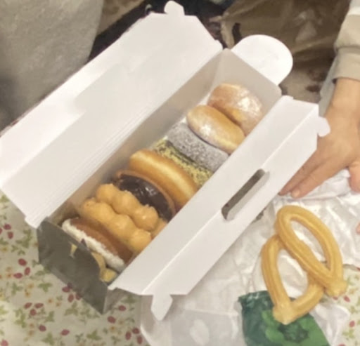
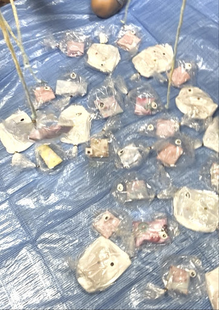
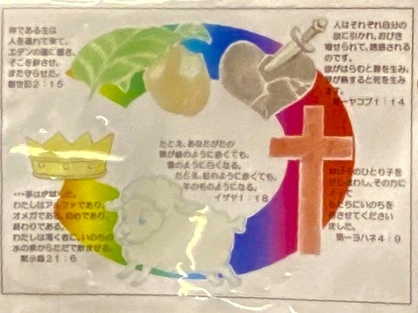

復活祭！イースター・キッズイベントレポート
2026年4月5日
✝️ イエスさまのおはなし
✨ 驚きの「50分間」！みんなで深めたイースター
「イエスさまはなぜ亡くなったの？」「罪がないってどういうこと？」
さらには「復活したあとのことももっと話して！」と、あゆむくんとだいごくんが身を乗り出してリクエストをくれました。
ふだんのお話しは10分ほどでまとめる私ですが、今回は子どもたちの熱心な質問に応えているうちに、気がつけば約50分もの濃密な時間になっていました！
時折、子どもたちから鋭いツッコミや楽しい「いじり」をもらいながらも（笑）、大人も子どもも合わせた約10名の参加者全員で、イエスさまのことを心ゆくまで、そして楽しく学ぶことができました🌸
これほどまでに真剣に、かつ笑顔でメッセージを受け取ってくれたみんなの姿に、私自身が一番励まされた気がします。
🕊️ イエスさまに「罪がない」ってどういうこと？
ふつうの人は「自分勝手したい」という弱さを持って生まれますが、イエスさまは神さまの力（聖霊）によって宿り、100%清らかな心で生まれました。そして30年間、一度も人を傷つけず、愛を完璧に実行し続けた「真っ白な心」の持ち主です。
借金を返せるのが「借金のない人」だけであるように、みんなの弱さを代わりに背負えるのは、真っ白な心を持つイエスさまだけでした。だからこそ、私たちの罪を身代わりに受けて、すべてを「赦し」へと変えることができたのです。
🎙️ 子どもたちが主役！名ナレーターが大集合
「ちしきの資料」として用意した紙芝居。今回は、3人の子どもたちに読み手をお願いしました。
さすが！と声が出るような抑揚をつけた素晴らしい発声。その美声に、聞いているみんなも自然と物語の世界に引き込まれていきました。
「ひょいっ」とアクセントをつけて楽しそうに読んでくれました。思わず「お兄さんになった時の読み方も楽しみやわ！」と言ってしまうほど上手でした。
いつも積極的に場を楽しくしてくれます。聞き取りやすい通る声で、将来立派なプレゼンができそうだなと、今から楽しみになるほどです！
❤️ 心に響いたあゆむくんとの対話
あゆむくんが「他人のために十字架につけられて死んだんだと思う！」と、本質を突いた答えをくれました。
鋭い感性にびっくり！！👏「誰か（他人）のために自分を犠牲にする」という十字架の深い愛の本質を、自分の言葉でしっかりと捉えられたことに、驚きと感動を覚えました。
「そうだね。そしてね、イエスさまは『あゆむくんのため』にも死なれたんだよ」
イエスさまの十字架は、遠い昔の話ではなく、今ここにいる「あなた」を愛しているからこそのプレゼント。そのことがあゆむくんの心に届いた、大切な瞬間でした。
神さまの愛の力のほうがずっと強いことを証明するためです！
🍛🍩 おなかいっぱい！お楽しみタイム

みんな大好き！
カレー＆ハンバーグ、おやつのドーナツも！！

のりちゃん企画！
大盛り上がりの宝探しゲームが出来ました。割と広い敷地内で、みんなが楽しく、どこかなどこかな、あった！って見つけられてすごく楽しい時間になりました！はじめてきてくれた、みゆちゃんも、子どもたちと一緒に参加してくれました。なんと、、最後はお宝を隠したのりちゃんがお宝を見てしまい、その目で場所がばれるという面白すぎるハプニングが！！そんなところもかわいらしくてすてきですね♪

お腹に景品が詰まった、とっても可愛くて素敵なゲームを考えてくれたのはあいこ先生！
当日は参加できなかったけれど、お家でお魚のお目目を描いたり準備をしてくれためぐみちゃん、本当にありがとう！
大人も子どもも本気モードでバトル開始！そんな中、あつしくんがとっても素早く上手にお魚をヒットさせ、新たな特技を発見（！？）していました👏
一方の私は、とにかく不器用で大苦戦……。ちょっとだけ「ずる」を許してもらって、しっぽに引っ掛けてなんとか釣り上げました（あせあせ💦）。
中にお菓子を詰めた30袋ものお魚を用意してくださったあいこ先生、最高の時間をありがとうございました！
🎨 のりちゃんが描いてくれた「みことば」

イエスさまが教えてくれた大切なみことばを、のりちゃんが素敵な絵にしてくれました。